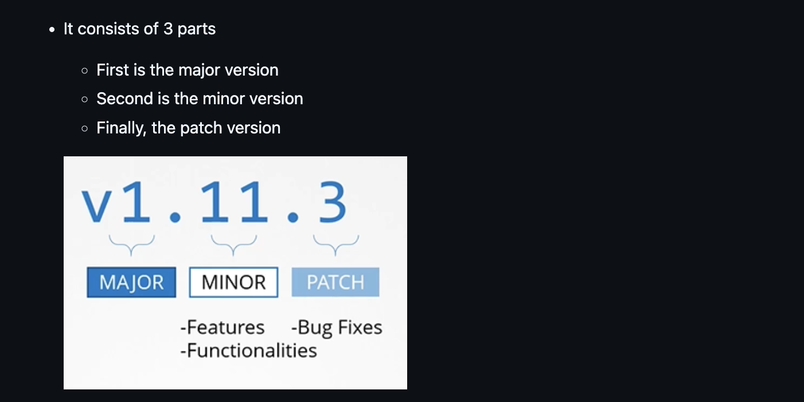
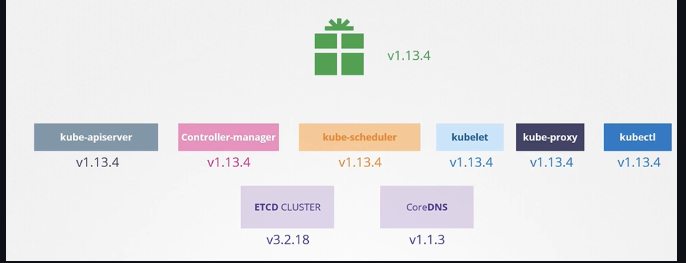

Cluster Maintenance
- Si un nodo está caido por mas de 5 minutos, los pods morirán, pero si existen replicas se crearán los pods que se murieron en algun otro nodo disponible. Si no hay replicas se morirá para siempre.
- Para mover los pods a otro nodo se utiliza este comando:
kubectl drain node-1. Esto también lo marca como Unschedulable - Cuando el nodo regrese en linea, se require correr el
kubectl uncordon node-1 - Si corres solamente el
kubectl cordon node-1esto unicamente lo marca como Unschedulable pero no mueve pods a otro nodo.
K8s Software Versions

Existen también versiones alpha y beta. Ejemplo:
V1.10.0-alpha: Estas versiones están en constante desarrollo, pueden cambiar en cualquier momento y se pueden romper. Estan desactivadas por defecto y no se recomiendan para prod.- V1.10.0-beta`: Son mas estables y no tienen tantos cambios. Ya han sido testeadas y sí están habilitadas por defecto y se consideran seguras para prod.
El paquete de kubernetes que se descarga tiene todos los componentes de Kubernetes excepto ETCD Cluster y CoreDNS, ya que son proyectos separados

Cluster Upgrade
¿Es obligatorio que todos los componentes de Kubernetes tengan las mismas versiones? No, los componentes pueden tener distintas versiones de lanzamiento.
Nota: Kubernetes solo da soporte a las últimas 3 version
Nota: Para hacer upgrades es recomendable hacerlo de una en una
Existen 3 diferentes estrategias disponibles para hacer upgrade de los worker nodes:
- Hacer el upgrade en todos los nodos a la vez. Con desventaja de que las aplicaciones dejerían de funcionar
- Hacerlo nodo por nodo
- Agregar un nodo extra con la version nueva, mover las apps y matar el nodo viejito.
Kubeadm upgrade
Asegurate que drenaste el nodo que vas a actualizar
- Primero se debe correr este para actualizar los repositorios de donde se va a descargar kubernetes
echo "deb [signed-by=/etc/apt/keyrings/kubernetes-apt-keyring.gpg] https://pkgs.k8s.io/core:/stable:/v1.28/deb/ /" | sudo tee /etc/apt/sources.list.d/kubernetes.list
curl -fsSL https://pkgs.k8s.io/core:/stable:/v1.28/deb/Release.key | sudo gpg --dearmor -o /etc/apt/keyrings/kubernetes-apt-keyring.gpg
- Después hay que correr este, que te dirá cuales version están disponibles
- Actualizar el kubeadm
sudo apt-mark unhold kubeadm && \
sudo apt-get update && sudo apt-get install -y kubeadm='1.30.x-*' && \
sudo apt-mark hold kubeadm
Se puede verificar con kubeadm version
- Correr el plan, este te dará el apply a ejecutar
- Por ultimo correr el apply
Se puede verificar viendo este mensaje: SUCCESS! Your cluster was upgraded to "v1.30.x". Enjoy!
Nota: Se siguen los mismos pasos para los worker nodes, con diferencia que se corre kubeadm upgrade node en vez de kubeadm upgradle apply
- Necesitas actualizar el kubelet y el kubectl, hay que correr el drain del nodo:
Importante: Verifica la version de tus nodos, tendrá la version viejita aun porque usa la version del kubelet con kubectl get nodes
# replace x in 1.30.x-* with the latest patch version
sudo apt-mark unhold kubelet kubectl && \
sudo apt-get update && sudo apt-get install -y kubelet='1.30.x-*' kubectl='1.30.x-*' && \
sudo apt-mark hold kubelet kubectl
- Por ultimo haz el uncordon
Verifica que tus nodo se haya actualizado con kubectl get nodes